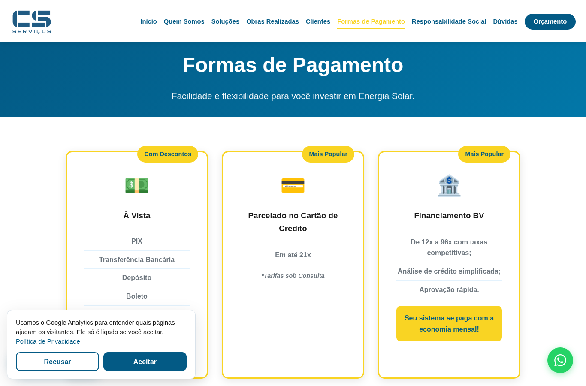
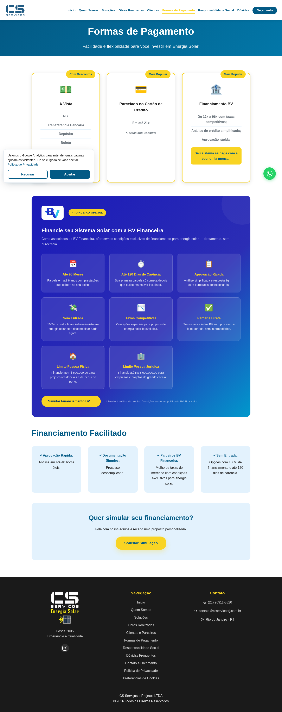

Sistema de Investigação de Marca e Identidade Online
https://csservicosrj.com.br/pagamento/
Prioridade: HIGH · Cenário: C_POSSIBLE_OFFICIAL_CHANNEL · Revisão humana: PENDING
O estabelecimento comercial atua como integrador de energia solar promovendo o crédito da BV Financeira. Todavia, a comunicação utiliza chavões de oficialidade ('✓ PARCEIRO OFICIAL', 'sem intermediários', 'diretamente'), exibe o logotipo da instituição financeira e omite por completo a declaração obrigatória de atuação na qualidade de correspondente bancário (Resolução CMN nº 4.935/2021), bem como o CNPJ da empresa, caracterizando risco de confusão visual e institucional de canal oficial. [Revisor: CONFIRM] A página pertence a uma empresa integradora de energia solar (CS Serviços e Projetos LTDA) que promove o financiamento da BV. Há destaque expressivo da marca/logotipo da BV Financeira acompanhado do selo '✓ PARCEIRO OFICIAL' e afirmações de vínculo direto ('somos associados BV — o processo é feito por nós, sem intermediários'), sem informar o CNPJ da empresa, sem indicar a condição regulatória estrita de correspondente bancário e sem divulgar os canais de ouvidoria do Banco BV, contrariando a Resolução CMN nº 4.935/2021. Configura-se quadro típico que justifica a manutenção de indício forte de irregularidade.


| Ref | Tipo | Local | Conteúdo |
|---|---|---|---|
| E-URL | domain | url | URL final: https://csservicosrj.com.br/pagamento/ (domínio: csservicosrj.com.br) |
| E-DISC-001 | text | search_index | Índice de busca (grounding): csservicosrj.com.br — **URL:** `https://csservicosrj.com.br` | **Uso da Marca:** Título e landing page dedicados: *"Financiamento Energia Solar BV Financeira | CS Serviços"*, utilizando o selo *"✓ Parceiro Oficial - Financie seu Sistema Solar com a BV Financeira"* e disponibilizando botão com chamada para *"Simular Financiamento BV"* | Apresenta-se com apelo visual de canal direto/associado oficial da BV | No rodapé e no corpo da página, omite a Razão Social completa, o CNPJ e a declaração de que atua estritamente como correspondente no país |
| E-SHOT-VIEWPORT | screenshot | viewport | evidence/Cb9d4969f44/attempt-1/viewport.png (sha256 9ef2c78ea05cf5a2…) |
| E-SHOT-FULL | screenshot | page | evidence/Cb9d4969f44/attempt-1/fullpage.png (sha256 283ce60d8d820889…) |
| E-TITLE | title | head | Financiamento Energia Solar BV Financeira | CS Serviços RJ |
| E-META-1 | meta | head | description: Financie sua energia solar pela BV Financeira: até 96x, carência de até 120 dias, sem entrada. CS Serviços, parceiro oficial BV no RJ. Peça seu orçamento! |
| E-META-2 | meta | head | og:title: Financiamento Energia Solar BV Financeira | CS Serviços RJ |
| E-META-3 | meta | head | og:description: Parceiro oficial BV Financeira no RJ: financie seu sistema solar em até 96x, sem entrada e com até 120 dias de carência. Parcelas menores que a economia na conta de luz! |
| E-CANONICAL | meta | head | https://csservicosrj.com.br/pagamento/ |
| E-HEAD-1 | heading | page | Formas de Pagamento |
| E-HEAD-2 | heading | page | À Vista |
| E-HEAD-3 | heading | page | Parcelado no Cartão de Crédito |
| E-HEAD-4 | heading | page | Financiamento BV |
| E-HEAD-5 | heading | page | Financie seu Sistema Solar com a BV Financeira |
| E-HEAD-6 | heading | page | Financiamento Facilitado |
| E-HEAD-7 | heading | page | Quer simular seu financiamento? |
| E-HEAD-8 | heading | page | Navegação |
| E-HEAD-9 | heading | page | Contato |
| E-HDR | text | header | Início Quem Somos Soluções Obras Realizadas Clientes Formas de Pagamento Responsabilidade Social Dúvidas Orçamento |
| E-FOLD | text | viewport (acima da dobra) | Início Quem Somos Soluções Obras Realizadas Clientes Formas de Pagamento Responsabilidade Social Dúvidas Orçamento Formas de Pagamento Facilidade e flexibilidade para você investir em Energia Solar. Com Descontos 💵 À Vista PIX Transferência Bancária Depósito Boleto Débito Crédito Cheque Mais Popular 💳 Parcelado no Cartão de Crédito Em até 21x *Tarifas sob Consulta Mais Popular 🏦 Financiamento BV De 12x a 96x com taxas competitivas; Análise de crédito simplificada; Aprovação rápida. Seu sistema se paga com a economia mensal! Área do Cliente Acessar Aplicativo Usamos o Google Analytics para entender quais páginas ajudam os visitantes. Ele só é ligado se você aceitar. Política de Privacidade Recusar Aceitar |
| E-FTR | text | footer | Desde 2005 Experiência e Qualidade Navegação Início Quem Somos Soluções Obras Realizadas Clientes e Parceiros Formas de Pagamento Responsabilidade Social Dúvidas Frequentes Contato e Orçamento Política de Privacidade Preferências de Cookies Contato (21) 96911-5520 contato@csservicosrj.com.br Rio de Janeiro - RJ CS Serviços e Projetos LTDA © 2026 Todos os Direitos Reservados |
| E-NAV | nav | header | <https://csservicosrj.com.br/> | Início <https://csservicosrj.com.br/> | Quem Somos <https://csservicosrj.com.br/quem_somos/> | Soluções <https://csservicosrj.com.br/solucoes/> | Obras Realizadas <https://csservicosrj.com.br/obras/> | Clientes <https://csservicosrj.com.br/clientes/> | Formas de Pagamento <https://csservicosrj.com.br/pagamento/> | Responsabilidade Social <https://csservicosrj.com.br/responsabilidade/> | Dúvidas <https://csservicosrj.com.br/duvidas/> | Orçamento <https://csservicosrj.com.br/contato/> |
| E-CTA-1 | cta | header | Orçamento <https://csservicosrj.com.br/contato/> |
| E-CTA-2 | cta | page | Simular Financiamento BV → <https://csservicosrj.com.br/contato/> |
| E-CTA-3 | cta | page | Solicitar Simulação <https://csservicosrj.com.br/contato/> |
| E-CTA-4 | cta | page | Área do Cliente Acessar Aplicativo <https://csservicosrj.com.br/app/> |
| E-CTA-5 | cta | page | Recusar |
| E-CTA-6 | cta | page | Aceitar |
| E-CONTACT-1 | contact | footer | Instagram <https://instagram.com/csservicosrj/> |
| E-CONTACT-2 | contact | footer | (21) 96911-5520 <tel:+5521969115520> |
| E-CONTACT-3 | contact | footer | contato@csservicosrj.com.br <mailto:contato@csservicosrj.com.br> |
| E-CONTACT-4 | contact | page | Contato via WhatsApp <https://wa.me/5521969115520> |
| E-IMG-1 | image | header (acima da dobra) | imagem alt='CS Serviços' src=https://csservicosrj.com.br/imagens/logo_topo.webp (100x60, acima da dobra) |
| E-IMG-2 | image | page | imagem alt='BV Financeira' src=https://csservicosrj.com.br/imagens/bv-financeira-logo.webp (69x48, abaixo da dobra) |
| E-IMG-3 | image | footer | imagem alt='CS Serviços' src=https://csservicosrj.com.br/imagens/logo_rodape.webp (150x170, abaixo da dobra) |
| E-TXT-001 | text | page | Boleto |
| E-TXT-002 | text | page | Financiamento BV |
| E-TXT-003 | text | page | ✓ PARCEIRO OFICIAL |
| E-TXT-004 | text | page | Financie seu Sistema Solar com a BV Financeira |
| E-TXT-005 | text | page | Como associados da BV Financeira, oferecemos condições exclusivas de financiamento para energia solar — diretamente, sem burocracia. |
| E-TXT-006 | text | page | Somos associados BV — o processo é feito por nós, sem intermediários. |
| E-TXT-007 | text | page | Simular Financiamento BV → |
| E-TXT-008 | text | page | * Sujeito à análise de crédito. Condições conforme política da BV Financeira. |
| E-TXT-009 | text | page | ✓ Parceiros BV Financeira: |
| E-TXT-010 | text | page | Clientes e Parceiros |
| E-TXT-011 | text | page | CS Serviços e Projetos LTDA |
| Dimensão | Sinal | Achado | Refs |
|---|---|---|---|
| VISUAL_IDENTITY | CONFUSION | O módulo dedicado a energia solar utiliza bloco em azul institucional acompanhado do logotipo da BV e selo amarelo de parceria oficial, atraindo foco prioritário para a instituição financeira. | E-SHOT-FULL E-IMG-2 E-HEAD-5 |
| DECLARED_COMMERCIAL_IDENTITY | CONFUSION | Embora a razão social 'CS Serviços e Projetos LTDA' apareça no rodapé, não há divulgação do CNPJ da entidade na página, impossibilitando a checagem imediata da titularidade jurídica. | E-FTR E-TXT-011 |
| CORRESPONDENT_TRANSPARENCY | CONFUSION | Inexistência da identificação formal e ostensiva da condição de correspondente no país e ausência dos contatos de SAC e Ouvidoria do Banco BV, contrariando o art. 14 da Resolução CMN nº 4.935/2021. | E-SHOT-FULL E-FTR |
| INSTITUTIONAL_LANGUAGE | CONFUSION | Discurso enfatizando ser 'parceiro oficial' e 'sem intermediários', o que contradiz a própria natureza de correspondente bancário e pode induzir o consumidor a crer que trata diretamente com a instituição. | E-TXT-003 E-TXT-005 E-TXT-006 E-META-1 |
| LOGO_USAGE | CONFUSION | Aplicação do logotipo da BV Financeira na seção promocional de financiamento de sistemas solares sem aviso regulatório anexo. | E-IMG-2 E-SHOT-FULL |
| SERVICE_JOURNEY | NEUTRAL | A simulação e captação de leads redirecionam para canais próprios de contato da empresa (WhatsApp e página de contato). | E-CTA-2 E-CTA-3 E-CONTACT-4 |
| CONTACT_CHANNELS | NEUTRAL | Canais de atendimento próprios (WhatsApp e e-mail comercial sob o domínio csservicosrj.com.br). | E-CONTACT-2 E-CONTACT-3 E-CONTACT-4 |
| CONSUMER_CONFUSION | CONFUSION | Risco de confusão ao sugerir que a contratação com a BV ocorre sem intermediação externa direta ('diretamente, sem burocracia', 'sem intermediários'). | E-TXT-005 E-TXT-006 |
O estabelecimento comercial atua como integrador de energia solar promovendo o crédito da BV Financeira. Todavia, a comunicação utiliza chavões de oficialidade ('✓ PARCEIRO OFICIAL', 'sem intermediários', 'diretamente'), exibe o logotipo da instituição financeira e omite por completo a declaração obrigatória de atuação na qualidade de correspondente bancário (Resolução CMN nº 4.935/2021), bem como o CNPJ da empresa, caracterizando risco de confusão visual e institucional de canal oficial.
Correspondência apenas por nome (ou fonte não autoritativa) no cadastro; requer confirmação por CNPJ.
| Tipo | Valor | Ref | Contexto |
|---|---|---|---|
| domain | csservicosrj.com.br | E-URL | |
| legal_name | RJ CS Serviços e Projetos LTDA | E-FTR | |
| contato@csservicosrj.com.br | E-FTR | ||
| social_profile | https://instagram.com/csservicosrj/ | E-CONTACT-1 | |
| legal_name | CS Serviços e Projetos LTDA | E-TXT-011 | |
| phone | (21) 96911-5520 | E-FTR | |
| Contato via WhatsApp <https://wa.me/5521969115520> | E-CONTACT-4 | ||
| partnership_declaration | parceiro oficial | E-META-1 | CS Serviços, parceiro oficial BV no RJ. |
| partnership_declaration | Parceiros | E-TXT-009 | ✓ Parceiros BV Financeira: |
Mapeamento indicativo para apoio à auditoria. Não constitui conclusão regulatória; a decisão definitiva pertence à auditoria.
Fonte: NORMATIVE
Art. 14. O contrato de correspondente deve estabelecer: [...] II - vedação à utilização, pelo contratado, de logomarca ou de outros atributos que sejam similares aos adotados pela instituição contratante em suas agências, postos de atendimento, sítio eletrônico na internet, aplicativo ou outras plataformas de comunicação em rede;
Hipótese: Uso de logomarca, uso excessivo/desproporcional ou de atributos similares aos adotados pela contratante em seus canais. Aplicável somente se confirmado o vínculo de correspondente.
Evidência observada: E-CTA-2 E-HEAD-5 E-IMG-2 E-SHOT-FULL
Informação faltante:
Fonte: NORMATIVE
Art. 14. O contrato de correspondente deve estabelecer: [...] III - divulgação ao público, pelo contratado, de sua condição de prestador de serviços à instituição contratante, identificada pelo nome com que é conhecida no mercado, com descrição dos produtos e serviços oferecidos e canais de contato da instituição contratante, inclusive de sua ouvidoria, em local visível, em destaque e em formato legível, por meio de: a) sítio eletrônico do correspondente na internet, acessível na página inicial; b) aplicativo e outras plataformas de comunicação em rede do correspondente; [...]
Hipótese: Divulgação ao público da condição de prestador de serviços/parceria ausente, insuficiente, ambígua ou sem destaque. Aplicável somente se confirmado o vínculo de correspondente.
Evidência observada: E-DISC-001 E-FTR E-META-1 E-META-3 E-SHOT-FULL E-TXT-003 E-TXT-005 E-TXT-006 E-TXT-011
Informação faltante:
Fonte: NORMATIVE
Art. 3º O correspondente atua por conta e sob as diretrizes da instituição contratante, que assume inteira responsabilidade pelo atendimento prestado aos clientes e usuários por meio do contratado.
Evidência observada: —
Limitações: requisitos contratuais/internos não fornecidos: mapeamento limitado ao texto normativo
Decisão: CONFIRM → STRONG_INDICATION / HIGH
A página pertence a uma empresa integradora de energia solar (CS Serviços e Projetos LTDA) que promove o financiamento da BV. Há destaque expressivo da marca/logotipo da BV Financeira acompanhado do selo '✓ PARCEIRO OFICIAL' e afirmações de vínculo direto ('somos associados BV — o processo é feito por nós, sem intermediários'), sem informar o CNPJ da empresa, sem indicar a condição regulatória estrita de correspondente bancário e sem divulgar os canais de ouvidoria do Banco BV, contrariando a Resolução CMN nº 4.935/2021. Configura-se quadro típico que justifica a manutenção de indício forte de irregularidade.
| Tema | Severidade | Questionamento | Refs |
|---|---|---|---|
| Nenhum questionamento | |||
| Fonte | Consulta / hipótese | URL original | Título / trecho |
|---|---|---|---|
| grounding | Objetivo: Sites de terceiros com o nome da marca ou páginas de financiamento na URL.
Execute no Google Search as seguintes consultas (dorks):
- (inurl:banco-bv OR inurl:bancobv OR inurl:bv-financeira OR inurl:bvfinanceira) (financiamento OR veículos OR crédito OR correspondente) -site:bv.com.br -site:bancobv.com.br -site:bvfinanceira.com.br -site:bvinvestimentos.com.br -site:napista.com.br -site:bvopen.com.br -site:meufinanciamentosolar.com.br -site:votorantim.com.br -site:vam.com.br -site:reclameaqui.com.br -site:jusbrasil.com.br -site:jus.br
- (inurl:financie OR inurl:financiar) ("bv financeira" OR "Banco BV") (veículos OR simulador OR loja) -site:bv.com.br -site:bancobv.com.br -site:bvfinanceira.com.br -site:bvinvestimentos.com.br -site:napista.com.br -site:bvopen.com.br -site:meufinanciamentosolar.com.br -site:votorantim.com.br -site:vam.com.br -site:reclameaqui.com.br -site:jusbrasil.com.br -site:jus.br
Liste de forma abrangente as páginas públicas encontradas (até 12 resultados distintos), informando para cada uma o nome do estabelecimento/perfil, a URL e como a marca é utilizada (destaque visual, título, feirão, simulador, redes sociais e se há ou não identificação clara de CNPJ e condição de correspondente bancário). H1-identity:inurl-brand | https://csservicosrj.com.br/pagamento/ | csservicosrj.com.br **URL:** `https://csservicosrj.com.br` | **Uso da Marca:** Título e landing page dedicados: *"Financiamento Energia Solar BV Financeira | CS Serviços"*, utilizando o selo *"✓ Parceiro Oficial - Financie seu Sistema Solar com a BV Financeira"* e disponibilizando botão com chamada para *"Simular Financiamento BV"* | Apresenta-se com apelo visual de canal direto/associado oficial da BV | No rodapé e no corpo da página, omite a Razão Social completa, o CNPJ e a declaração de que atua estritamente como correspondente no país |
Original: https://csservicosrj.com.br/pagamento/
Final: https://csservicosrj.com.br/pagamento/
| Artefato | Caminho | SHA-256 | Bytes |
|---|---|---|---|
| screenshot_viewport | evidence/Cb9d4969f44/attempt-1/viewport.png | 9ef2c78ea05cf5a24d250cc415f72908c0d7f2d78c86446f70b71804dd2dbcbe | 199417 |
| screenshot_full | evidence/Cb9d4969f44/attempt-1/fullpage.png | 283ce60d8d820889db2960d2138ab9317db4fe42abad55b0e4de06d8b56cf75d | 767492 |
| html | evidence/Cb9d4969f44/attempt-1/page.html.txt | b6b2dd6a407422cb8718ab65219abcb9ef7ff042090806934a4753e852609813 | 20178 |
| text | evidence/Cb9d4969f44/attempt-1/text.txt | b9b739a9c5d45a1a02c10d16f0d4ceecf22d7c04400507da9dbada5a99f8baf3 | 2712 |
| page_data | evidence/Cb9d4969f44/attempt-1/page.json | 8a13cd44f8cc62a93463f8b4ae25773aa5fa4baa0929b8300293cf4b7fc77a56 | 12350 |
| Quando | De | Para | Nota |
|---|---|---|---|
| 2026-11-25T18:12:00+00:00 | DISCOVERED | QUEUED | prioritised (score 6.5) |
| 2026-11-25T18:13:46+00:00 | QUEUED | COLLECTING | |
| 2026-11-25T18:13:50+00:00 | COLLECTING | COLLECTED | |
| 2026-11-25T18:13:50+00:00 | COLLECTED | ANALYZING | |
| 2026-11-25T18:14:15+00:00 | ANALYZING | REVIEWING | |
| 2026-11-25T18:14:23+00:00 | REVIEWING | COMPLETED |